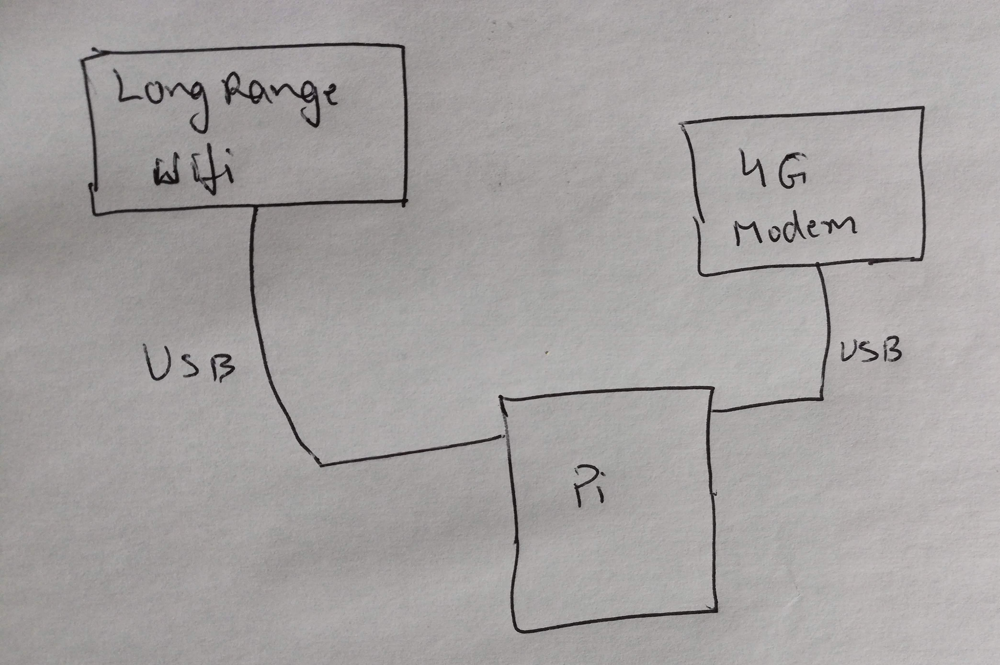
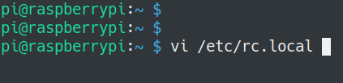
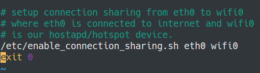

Adhoc cell tower or connection sharing¶
Raspberry Pi on the UAV creates wifi access point for video transmission and control. That is how our app connects to the copter. This present another easy opportunity for a feature that can be quite useful in remote areas like forests or mountains. The ability to share an internet connection. As the UAV can fly high, it can easily connect to remote cell towers that are just out of reach from ground. And then it can share that internet connection over wifi. Anyone connected to UAV at that point will receive the shared internet connection.
So what do we need to setup such a connection sharing.
3G/4G USB modem.
Edit the iptables file for sharing.
3G/4G USB modem.¶
These days mostly modems that you get are portable hotspots that connect to the cell network and share the connection over wifi. If you are using such a device and the range provided by the modem itself is good enough. You can just put the modem on the UAV and done with it. You don’t even have to connect to Raspberry Pi. But if you want to use some external wifi antenna so that you can fly it high up and still connect to it, you need to connect the modem to Pi through USB and then share the modem through Pi’s wifi. Most of these modems show up a wired interface on the Pi.
{kind=link}
Edit the Iptables file¶
We have a file /etc/rc.local on Pi that is executed automatically every time the Pi boots. Use your favorite editor (vi/nano) and open the file
{kind=link}
In the file we have a script that runs in the end that takes two arguments. First argument is the interface which has the internet connection and second argument is the interface which is configured as hotspot for sharing. In the case shown in below image internet is available on eth0 and we are sharing it over our primary wifi interface wifi0
{kind=link}